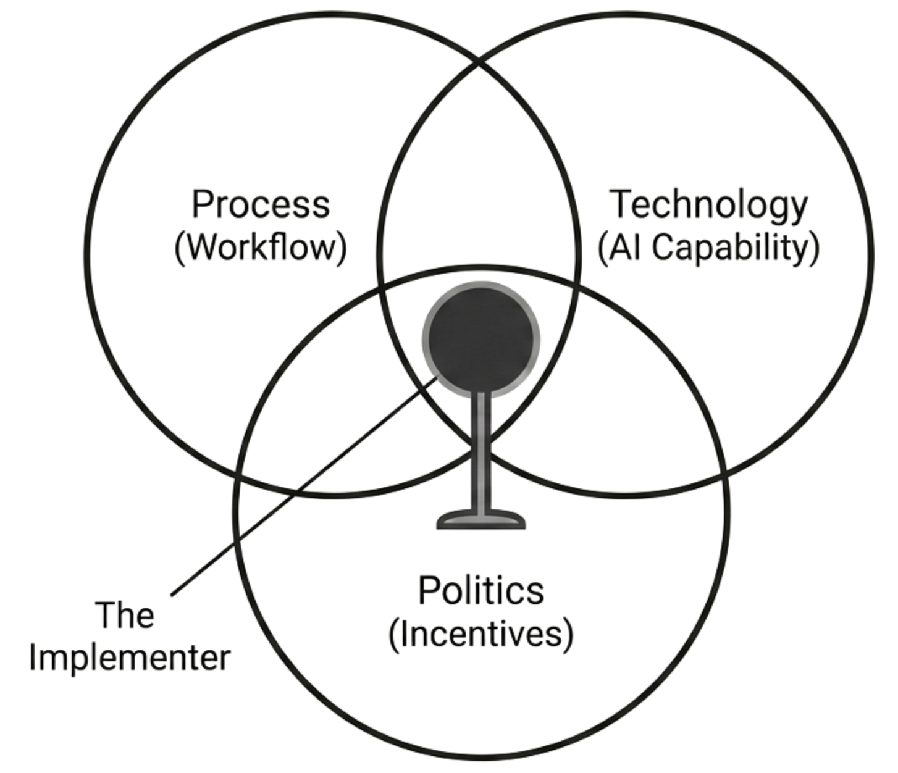

In the late 1980s, American police departments began buying computers. By the early 2000s, most departments had adopted information technology (IT) for tasks like filing crime reports, dispatching, and administration. After such large investments, the expectation of a productivity boost was not unreasonable: better information should mean better policing. It did not.
One of us (Garicano), working with John Heaton of the Rand Corporation, obtained data from nearly all police departments in the United States between 1987 and 2003, tracking the adoption of IT and its effects on crime clearance rates and reported crime. The results were surprising. IT adoption was associated with a roughly 10 percent increase in reported crime! We discovered this was not because crime rose, but because the new systems made it easier to file reports, creating more paperwork without improving outcomes. IT made the bureaucracy more thorough, not more productive.100
However, the productivity gains did appear when technology was combined with deep organizational change. The successful model that diffused through the US was Compstat, the management system pioneered by Bill Bratton in the New York Police Department in the 1990s. If you have seen the classic TV show of policing in Baltimore “The Wire“, you know Compstat. It was a bundle of complementary practices entirely rethinking police work: using the information technology to geolocate crime in real time, training the workforce extensively to interpret and react to the data, deploying the police proactively to the “hot spots“, and holding the precinct commanders accountable for results. Departments that adopted the full Compstat bundle, IT plus specialization plus skilled workers plus accountability, saw clearance rates roughly 3.2 percentage points higher and crime rates about 5 percent lower. Departments that adopted only parts of the bundle gained little or nothing.101
We are only three years into AI implementation, but many of the conversations we have had with different organizations sound to us like pre-Compstat policing. A patrolman given a computer does not necessarily do “better police“ (in the Wire parlance), any more than a human resources employee with access to ChatGPT automatically improves human resource management. Yes, some queries will be answered more quickly, and some documents will be better organized. But nothing will change in her day-to-day production.
Hence, the problem is not that organizations do not adopt AI. Organizations everywhere are adopting AI tools, but they are layering them on top of existing workflows, using AI to draft emails, summarize meetings, and produce drafts without changing how work is organized. The technology is spreading rapidly. The organizational change that would make it productive is not.
This chapter explains why that gap exists, what kind of person can close it, and why that person sits firmly on the human side of the autonomy threshold. Implementing technological adoption is not about exercising power within the existing system. It is about redesigning the system itself.
The shadow AI economy
A classic example was a large central bank one of us visited. Officials had two PCs on their desk. One was owned by the bank; the other, by the official.
The bank PC was locked, without access to large language models. Hence, officials did what many knowledge workers do everywhere: they handled most tasks on the safe machine, but they kept their personal laptop open, with a window on ChatGPT or Claude, ready to help them write, compute, or analyze anything their official desktop could not do.
In this shadow AI economy, employees use consumer AI tools, including their own accounts, machines, and mobile phones, to automate parts of their work without informing IT, the legal department, or the compliance department. Microsoft's 2024 Work Trend Index found that 75 percent of knowledge workers use AI at work, with 78 percent bringing their own tools. Microsoft and LinkedIn call this “Bring Your Own AI“: 78 percent of AI users bring their own tools to work.102
In the meantime, these same organizations are publishing press notes and making large internal town halls to celebrate their “responsible AI road map.“ They launch pilots, undertake proofs of concept, and run some demos to impress the CEO and clients, but the workflow of the organization is untouched.
The official AI rollout is stuck in what consultants call “pilot purgatory.\“ In pilot purgatory the project does not die, because everyone can point to activity. But it does not live either, because it never becomes “how we do things here.“ In Microsoft's survey, 60 percent of leaders said their company lacks a vision and plan to implement AI.
Since the workflows do not change, any productivity gain that may happen is small, and it is captured by workers in the form of leisure. A top executive of a large firm told us that when he measures the productivity of individual workers in a controlled setting, he sees large impacts, but when he looks at the productivity of the entire organization, he sees nothing. In his view, IT engineers are “smoking the AI productivity gains in the corridor.\“
The reason for the gap between capabilities and the productivity impact is not the technology itself, but its implementation. The structural gap between what AI can do and what organizations actually do with it is growing, large enough to provide many messy jobs.
Why organizational change is so hard
Organizations are systems of interlocking processes, routines, incentives, and decisions. When a new technology fits neatly into the existing architecture, adoption is simple. If the technology to make tires improves, the next generation of cars will carry better tires. Nothing else about the car, or about the organization that builds it, needs to change. This is what Rebecca Henderson and Kim Clark (1990) called component innovation: a better part slots into an unchanged system.103
Contrast this incremental innovation with the transition from internal combustion engines to electric vehicles. Here everything about producing cars must change. The central role traditionally played by mechanical engineers and chemical engineers expert in combustion simply becomes irrelevant. Adopting this radical innovation requires changing the entire architecture of the organization.
Henderson and Clark showed that it is this second kind of change, what they called architectural innovation, that destroys incumbents. The difficulty is not that the new component is hard to build. It is that the relationships between all the components must be redesigned simultaneously. The resistance comes not only from ignorance of the new technology, but also from the deep adaptation of the existing organization to the old architecture. Existing firms have routines, communication channels, reward systems, and an organizational culture all tuned to the old way of doing things. They must unlearn and undo all of these practices before they can adopt the new ones.
Generally speaking, three distinct problems make architectural innovation so hard: complementarities that require simultaneous changes, fog that obscures the destination, and resistance from those who lose. These obstacles define the problem. They also define the type of person who can solve it.
Complementarities and interdependencies
Economists Paul Milgrom and John Roberts have shown that organizational features tend to cluster together when they fit with each other, that is, when having one feature makes having another one more valuable.104 For instance, in traditional mass production, the cluster of organizational features includes long runs, standardized products, narrow job definitions, inventory buffers, and hierarchical control. In contrast, modern-style (Toyota) manufacturing is another cluster: short runs, customized products, flexible workers, just-in-time delivery, and decentralized decision-making. You cannot pick one feature from each cluster and expect it to work. The pieces fit together as a system.
This is why deep organizational innovation is so difficult. It requires many features to change together. Researchers studied steel finishing lines and found that plants that adopted individual \“modern\“ human resources practices, such as team or incentive pay, saw little improvement in productivity. Only plants that adopted the full cluster of modern practices achieved large productivity gains. The reason is that for these practices, the effectiveness of changing one depends on what is done with the others. While one often gets the advice of starting small when making changes, this can be a mistake when the parts of the organization are interdependent.105
The large number of interlocking features suggests that, when a new technology such as AI affects the productivity of each task, a large number of changes have to be made simultaneously to take advantage of the organizational change. And this is not easy.
Fog
The problem gets worse when firms do not know which direction they should switch to. This often happens in architectural innovation. The map is blurry, and the road to a better outcome is messy.
Organizational sociologist James March drew a distinction between exploitation and exploration that captures the difficulty.106 Exploitation means refining what you already do: optimizing existing processes, cutting slack, and squeezing more from known routines. Exploration means searching for entirely new ways of doing things. Organizations that face architectural innovation must explore, but they are staffed with people whose skills, habits, and incentive structures are built for exploitation. They do things according to their habits, and their habits were adapted to the old regime.
The fog problem is that the production function of the new regime is unknown. No one can specify in advance what the right combination of AI tools, workflow redesign, skill requirements, and communication channels will look like. The space of possible configurations is enormous. Trial and error is the only way forward, but trial and error is expensive and slow, and most trials will fail.
An example of this is the introduction of electronic health records in US hospitals. After the U.S. federal government passed the HITECH Act in 2009 with $27 billion in incentives to adopt electronic health records, everyone assumed that digitizing patient information would improve care, reduce errors, and cut costs. Adoption took place fast, and by the mid-2010s, most hospitals used at least a basic EHR system.107
But the productivity gains did not take place. Physicians spent more time entering data and less time with patients. One study showed physicians spent about 49 percent of their day on EHR and desk work, and only 27 percent with patients.108 Hospitals had adopted the technology, but nobody knew what the right clinical workflow around the EHR should look like. Each physician had their own work habits. More than a decade and tens of billions of dollars later, the process is still ongoing.
This is the same pattern Paul David identified in the diffusion of the electric dynamo.109 Factories started to use the electric dynamo in the 1880s and 1890s, but productivity growth from them did not appear in the aggregate statistics until the 1920s. The reason for this long lag was that factory owners had to discover, by experimentation, over a length of decades, that electrification required redesigning the entire factory floor, from the layout of machines to the organization of the labor force. The technology was available; the knowledge of how to use it was not. The EHR story, far more recent and still unresolved, tells us the same thing about information technology in complex organizations. There is every reason to believe AI will follow the same path.
Resistance to change
Even when the destination is clear, getting there requires overcoming the resistance of those who lose from the change. Resistance to organizational change is not irrational. It follows from the distribution of costs and benefits.
In most firms there will be winners and losers from the deep technology adoption. The winners experience complementarities: technology helps them do better work. The losers feel (or are) threatened by the change. The new technology eats part of what they used to do or removes the gatekeeping role that gave them influence.
Deep adoption depends on inputs provided by both groups. However, many of these inputs are hard to contract on: data access, tacit know-how about how spreadsheets no one else understands work, and active cooperation in the redesign of workflows. In the language of incomplete contracts, they are noncontractible: hard to verify and hard to reward. The reader will recognize the theory from Chapter 6: the party controlling noncontractible inputs gains bargaining power, and implementation is rich in noncontractible inputs.
If the threatened group does not cooperate, that is, they do not provide access to the data, they do not explain how the spreadsheet works, or they do not document the process, deep implementation fails. This resistance to change does not have to take the form of a dramatic rebellion. It may show up as constant frictions and obstacles: “Apologies but we cannot release that dataset yet.“ “We are running another risk assessment.“ “We have not concluded the training.“
The resistance is more successful the larger the “goodwill“ available, that is, the incumbency power enjoyed by the organization in the form of brand, installed base, switching costs, and market power. That slack increases bargaining power for resisters. The more the firm can coast, the easier it is for internal groups to drag their feet.110 The workers of a startup cannot play stalling games. If a key decision on technology adoption spends six months being bargained over in committees, the startup dies.
Middle managers are often the key resisters. That is because they combine key tacit knowledge with a lot of (justified) fear. Middle managers often control the noncontractible inputs that deep adoption requires. They are the ones who know how the undocumented spreadsheet works and have institutional memories about the different processes. Furthermore, when new technology compresses the hierarchy, allowing frontline employees to process information that used to flow through the middle, or allowing top managers to reach down directly, middle managers are the most likely losers. They have reason to resist.
Several levers can break the stalemate. Competition reduces the ability to coast, making resistance unaffordable. Firms can try to buy cooperation with retraining or job guarantees, though such promises are hard to enforce once the threatened group has given up control---and hence unlikely to be accepted by them. Incumbents can build separate units for the new technology, reducing the amount of goodwill that backs resistance, at the cost of losing synergies.
The implementer as a distinct scarcity
The three obstacles to implementation we have described, simultaneous changes in many parts of the organization, unknown destination, political resistance, delineate why implementation is hard. They also explain why it requires a specific kind of person.
In the previous chapter, we analyzed why organizations need humans who can exercise authority, managers who can decide between conflicting goals and make the decision stick. That authority is a permanent feature of organizations. It does not depend on whether the organization is changing or stable. Someone must always decide who wins and who loses. Implementation is not about exercising power within the existing system. It is about redesigning the system itself. This is not about sitting in a chair deciding between existing departments that disagree. Implementation requires dismantling the chair, moving it to a different place or getting rid of it, and persuading those who liked the old arrangement to sit down again.
The scarcity that this requires is different. It is not just about legitimacy, the ability to bear consequences, and the political standing to make decisions stick. Implementation leads to a cognitive scarcity: the ability to hold three different maps of the organization in her head simultaneously, and to see where they conflict.
Bundling three kinds of knowledge
Process knowledge. One of us recently had a long conversation with the founder of a large software firm. He is in the midst of deeply restructuring the entire organization, which means doing a lot of delayering. And he pointed out a scarcity he encounters frequently when he talks to fellow CEOs: most senior managers have no idea of what actually is going on in the lower levels of the organization. The layers in between serve to distribute the work, to deal with the routine work, etc. But they also serve to bury in fog the work of the entire organization. How many people do we really need for the work we do? Who is actually doing any productive work, and who is not? This question is surprisingly opaque.
The knowledge of the workflow is tacit, and surprisingly hard to come even for those inside the organization. The work does not happen in the way the organizational chart says it happens. Every organization has an official process and a real one. Formal authority may be distributed, and many steps required to approve a loan. The real process involves a senior analyst who has been there for twenty years and who knows, from experience, which applications will trigger a regulatory flag. Everyone routes the tricky cases through her desk. She is not in the org chart. She does not have a title that reflects this function. But if you try to redesign the loan approval workflow without understanding her role, the new system will break.
The knowledge of the workflow cannot be acquired from documents or data. It requires spending time on the ground. Workflow knowledge is tacit, local, and likely to be tightly guarded by those who have it.
Technology knowledge. This is the knowledge about how AI actually works. Not what it does in a demo, but what it does when pointed at the messy, unstructured data of the organization. Most CEOs have seen dozens of presentations about AI, and have a sense of what the tools can do, but most of them have not installed Claude Code in their computers and tried to produce a finished analysis, to understand what it really can do and what its limitations are.
One top executive we spoke to admitted he only started using AI himself when he was pressed for time on a deliverable, and he was stunned by what the tools could actually do. Another CEO of a top consulting firm we know changed her attitude toward AI adoption completely after spending two hours sitting next to one of her junior associates, watching him obtain results she had assumed were years away. Without doing it oneself, or at least sitting close enough to someone who is doing it, the knowledge simply does not form.
Success at implementation requires technology knowledge on both sides. It requires knowing that the high benchmark result of a particular model is unlikely to translate in the firm's context because the data is messy and unstructured. And it requires following closely on the astonishingly rapid evolution of AI tools, which are changing every month.
Political knowledge. We have spent the previous chapter charting this kind of knowledge, so the reader understands here where the argument stands. But the political knowledge required to change a process is harder than the steady knowledge required to solve standard conflicts. Implementing drastic changes requires managing a transition during which it is not obvious who the winners and losers may be. Yes, most likely the junior analysis in internal audit can be replaced, and most likely the senior manager is as necessary as ever. But everyone in between faces genuine uncertainty about their future, and this uncertainty is unlikely to be resolved in a while.
But all three groups, the senior manager, the middle manager, and the entry level manager, must cooperate. They must document the tacit knowledge, knowing that training the system makes them less indispensable. They must all participate in a redesign that may make at least some of them superfluous.
Jack Maple and the Compstat battle
You could argue that a process consultant should redesign the workflow, a change management person should negotiate with the workers, and an AI expert should handle the technology. The problem is that the three types of decisions are interrelated, and any decision on one dimension will affect the others. A bank needs to choose a system that eliminates a large share of loan reviews but meets tough resistance from middle management, as opposed to a less thorough tool that has more human involvement and that is more likely to be acceptable. No answer is objectively better. It depends on the real authority of the CEO, on the market for compliance work, and on the regulatory push back.
The Compstat story that opened this chapter illustrates why the bundle cannot be split apart. There was indeed a key person conceptualizing and implementing this strategy. Peter Moskos, an expert in policing who also spent time as a patrolman in Baltimore, gives the credit to a colorful cop, Jack Maple, a working-class transit lieutenant from Queens, who wrote a letter jumping a few layers up the chain. Bill Bratton, the police commissioner, read it and said, “This guy is smart,“ and pulled him up.111
Maple had the required bundle of skills (politics, policing, data) in his head because he had lived at the street level and knew the organizational problem at the same time. He was not an engineer, but he understood data as a tool. He was obsessed with geolocating crime long before the digital tools existed: he covered 55 feet of wall with maps of the system and tracked crimes and clearances with crayons, by hand, what he called the “Charts of the Future.“112
Then, with Bratton backing him, he changed the entire process of policing in New York. He got crime data centralized, and he made a fast, simple change: the specialized units were working 9--5, Monday to Friday, while crime worked nights and weekends. Maple made sure this was no longer the case.113 As Bratton put it, the Compstat meeting became “the grand theater where precinct commanders are called to account,“ sometimes “browbeaten“ in front of their peers.114 Commanders hated it: it was “a pain“ to drag your staff to headquarters and “report to this transit lieutenant,“ and the questioning could get “pretty heated.“115 This was the enforcement mechanism that made the whole bundle real: the data got used, the deployments changed, and the tactics followed.
Once you see Maple this way, you see why Compstat could not be disentangled. Maple was the perfect implementer: not the inventor of a tool, but the person who knows policing, knows the organization, and knows how to make the parts move together. He held the three pieces of knowledge, process, technology and politics, in his head simultaneously. No committee of specialists could have done what he did.
To us, the moral of the story is that people with this bundle of knowledge are scarce, but they exist, and are often buried below the lofty levels of the hierarchy. The perfect implementer is not going to be the CTO or CFO. She is likely someone down at the street level.
Maintaining the trust
An organization that has been operating for some time is at a local peak. Processes, incentives, communication and division of labor all fit with each other. It may not be perfect. But it works. Everyone knows what to expect.
When a Jack Maple appears, there is a new vision: a higher peak over there, at the other side of a long valley. To get there, everyone must change the way they work. And all must change at the same time. And before it starts working and we are all better off, things will be a mess. Productivity will drop. Errors will increase.
How do you bring people along through such a change? You may have the maps, you may have the conviction. But there are always losers in the change who are waiting for any stumble to cry wolf, and there are going to be errors. The production function with AI processes is unknown, and no one really knows if the change is going to work.
That is why the implementer must be a person, or a small team, with enough credibility and know-how on the three dimensions to earn trust. Not someone exercising power from above, but someone who has been close enough to the work to understand what is being asked of people, and credible enough that they believe the valley leads somewhere. Maple could drag precinct commanders to headquarters because he had been on the street himself. He knew what he was asking them to change, and they knew he knew.
The combination is rare: deep enough in the organization to understand the real workflow, technically fluent enough to see what the new tools make possible, and politically skilled enough to hold a coalition together while everything temporarily gets worse. That combination is what makes the implementer scarce. And it is what makes the role irreducibly human.

BBVA: Escaping pilot purgatory
You would not expect BBVA to be nimble. It is a global bank present in 25 countries, with more than 77 million clients and about 125,000 workers. It operates under heavy regulation, deep compliance requirements, and a demanding kind of risk culture.
And yet BBVA did something many firms fail to do: it escaped pilot purgatory. One of us (Garicano) has been working with them on this process and was able to document how the way it did so maps directly to the mechanisms described above.116 It managed to thread the needle of the intersection we have described: knowing what the tools could do, knowing how the bank actually worked, and knowing where resistance would appear.
Speed. BBVA's leaders recognized the shadow AI economy was already active. Their conclusion was that unmanaged, hidden usage was the risk. The safe move was to deploy a secure, managed solution aligned with how employees already worked. So they compressed the typical risk assessment, legal review, and compliance cycle into two months. They chose an interface employees actually wanted: ChatGPT Enterprise, hosted so that sensitive data stayed with the bank and was not used to train models. They found a team of integrators with Elena Alfaro at its head. She was a 20-year veteran of the innovation department of the bank, dynamic, outcome oriented and a clear communicator.
Speed was a way of bypassing veto points. Two months is not enough time for frictions to accumulate. By the time objections could be organized, the tool was already deployed. In the framework of this chapter, speed collapsed the valley: the organization moved through the painful transition before resistance could organize.
Scarcity and status as incentives. To ensure adoption was fast, BBVA used a seduction strategy, “without command and control“ (sin ordeno y mando). They started with scarcity: 3,000 licenses distributed through business leaders called Champions, who were told to give them to the most motivated and committed people, not the most senior.
Scarcity created fear of missing out (FOMO), turning the tool into a privilege. It also ensured utilization as the policy was implemented on a use-it-or-lose-it basis. And it rewarded building and sharing custom GPTs, not just clicking.
This changed the internal politics, by creating a new status ladder based on usefulness, not rank, and giving ambitious employees a reason to push through friction rather than accept it. Instead of fighting gatekeepers head-on, BBVA built a parallel power structure that made adoption attractive.
Autonomy and responsibility. BBVA added an important protection: prompt privacy. No one had access to employees' chats unless required for compliance. Only what users chose to share became public. That reduced the aversion to the use of AI, and eliminated a trust deficit that otherwise feeds resistance.
The defining feature of the shadow AI economy is peer learning. Someone finds a prompt that works. Someone else copies it. BBVA moved to formalize that network without suffocating it. They built an Adoption Network with Champions formed by around 25 heads of areas and countries plus over 100 co-champions; Wizards, the roughly 200 power users who provide peer-to-peer support; and a Community of Practice, a horizontal forum that became the most active in BBVA's history. They recognized that the fastest way to spread know-how is often not through training modules but through peers.
Their governance was built around what they called the autonomy-responsibility binomial: give employees autonomy to experiment, but make them responsible for outputs. They imposed a clear human-in-the-loop principle: AI drafts; a human owns the work. Outputs cannot directly overwrite core systems without validation. They required training, an exam, and a signed procedure document for liability. And---this was key---they avoided a governance bottleneck that would have killed everything. Instead of forcing thousands of user-built GPTs through a centralized risk admission process, they created an automated quality score to evaluate GPTs on indicators like guardrails and clarity, with a governance procedure focused only on high-visibility or widely used assistants. This is the difference between governance as a brake and governance as steering.
Escape velocity. The results showed what escape looks like. BBVA scaled its program from 3,000 to 11,000 active users, with users reporting two to five hours per week saved on average. Weekly usage exceeded 83 percent of enterprise users; weekly active days increased from 2.8 to 4.1; average prompts were around 50 per week; and more than 4,800 active GPTs were created internally.
BBVA's internal audit unit achieved 100 percent license adoption, supported by top management sponsorship and a dedicated team: 99 percent active users across all countries, about 4.5 active days per week, and estimated time savings of three to four hours per auditor per week across 600-plus auditors worldwide.
Alfaro\'s role maps directly onto the implementer archetype. She had two decades of institutional knowledge about how BBVA actually worked---the process map. She understood the technology well enough to choose the right deployment model and anticipate where it would break. And she had the political standing, with the full backing of a tech savvy Chairman (an MIT physics grad and Sloan MBA), and communication skills to hold the coalition together while the organization moved through the valley. Like Maple, she was not the inventor of the tool. She was the person who made it real inside a complex organization.
Jobs and earnings: the implementation paradox
We are facing a huge organizational challenge. And sadly, Artificial Intelligence will not help with it. For all the cognitive abundance AI will engender, there is one type of work it cannot do: implementing the deep reorganization that our economies must undertake.